WPP Open / Open Pro: AI 통합 운영체제 출시. 글로벌 프로덕션을 단일 AI 유닛으로 통합. Coca-Cola, L'Oréal 등 대형 클라이언트 AI 워크플로우 적용.
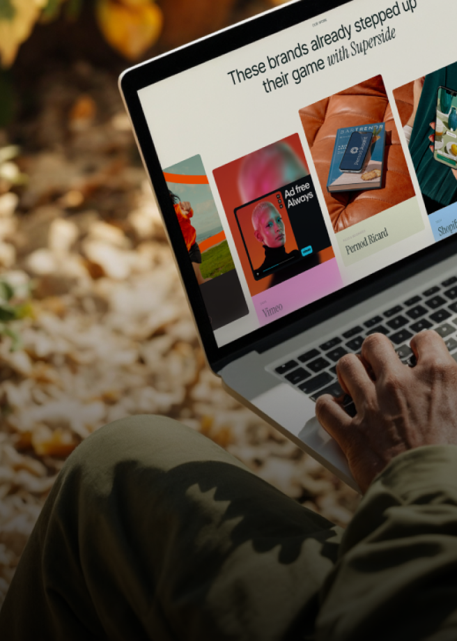
GLOBAL
Superside — AI-네이티브 에이전시
200+ AI 디자인 프로젝트 수행. Human-AI 하이브리드 모델: AI가 초안 → 디자이너가 정제. 리드타임 80% 단축 사례 다수.
GLOBAL
Monks (구 Media.Monks) — Pre-production 혁신
스토리보딩, 세트 디자인, 무드보드를 AI로 자동화. 촬영 전 시각화 비용 대폭 절감.
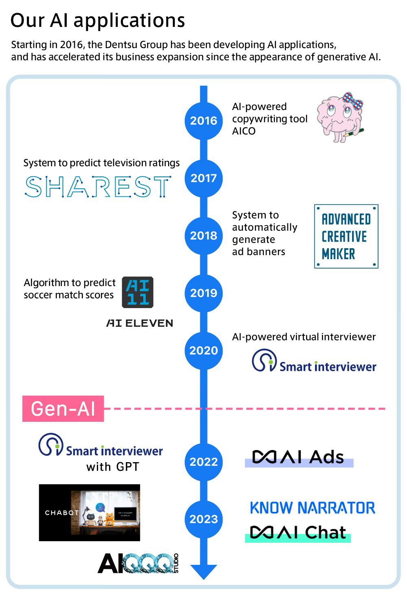
GLOBAL
Dentsu — QA 자동화
크리에이티브 QA 과정: 8시간 → 2분 (240배 단축)
1-3. 브랜드 캠페인 — 실전 사례
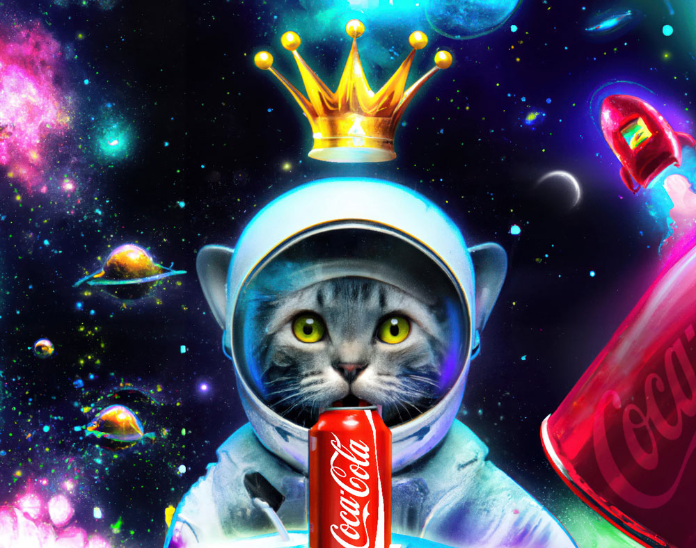
BRAND
Coca-Cola "Create Real Magic"
GPT-4 + DALL-E 기반 소비자 참여 캠페인. 사용자가 직접 AI로 코카콜라 광고 이미지 제작. 업계 대표 AI 마케팅 성공 사례.
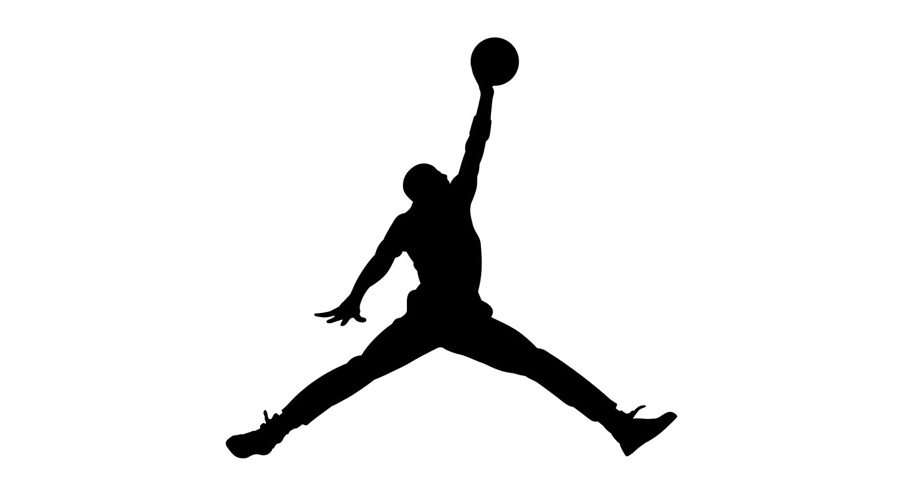
BRAND
Nike — AI 활용의 교과서
Travis Scott 광고: Midjourney로 5,000장+ 이미지 생성 후 선별. 올림픽 A.I.R. 프로젝트: 선수 데이터 기반 AI 맞춤 디자인. Serena Williams AI 영상: 1억 뷰+ 달성.
BRAND
Toys "R" Us — AI 브랜드 필름
Sora(OpenAI)로 제작한 브랜드 스토리 영상. AI 영상 제작의 상업적 가능성 입증.
1-4. 한국 사례 — 우리 업계의 변화
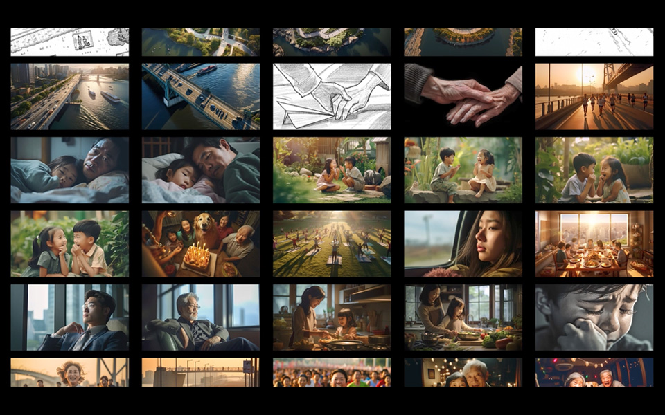
KOREA
제일기획 — 삼성생명 100% AI 광고
1만 장 AI 이미지 생성, 3개월 제작기간. 기존 촬영 프로세스 전면 대체. 비용 절감 + 크리에이티브 가능성 확장.
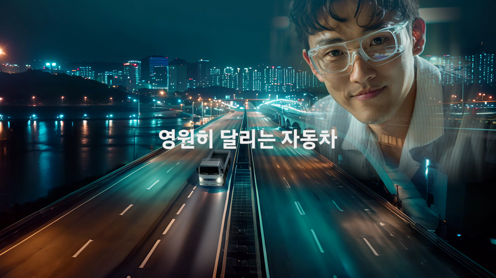
KOREA
이노션 — 현대자동차 "영원히 달리는 자동차"
100% AI로 제작된 TV 광고. 15개 이상 AI 기술 복합 활용. 광고계 최초 수준의 전면 AI 프로덕션.
KOREA
대홍기획 — AI Studio 신설
국내 유일 논슈팅필름 스튜디오 (카메라 없는 영상 제작). AI 기반 크리에이티브 전담 조직.
KOREA
그 외 브랜드 사례
우리카드: AI 생성 이미지 광고 캠페인. 하이모: AI 기반 비주얼 제작. 제이키즈: AI 활용 브랜드 콘텐츠.
한국디자인진흥원
2024년 「디자인 산업 AI 인력 실태조사」 보고서 발간. 디자인 현장의 AI 도입 현황과 인력 수요 변화를 공식 조사.
1-5. AI는 도구다 — "끝내는 것"이 아닌 "함께하는 것"
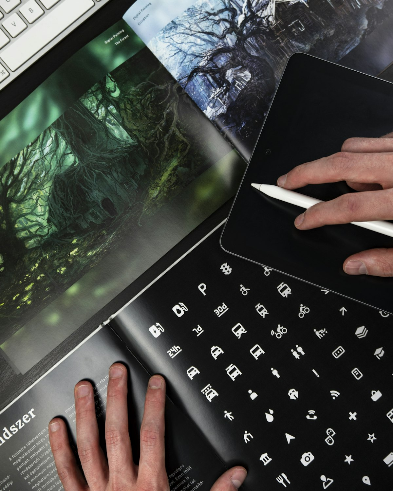
학술 연구가 증명하는 AI 협업 효과
AI 협업이 모든 창의성 차원에서 성과 향상 (초보=영감, 숙련=디테일)
800명 대상 실험: AI 갤러리가 더 깊은 몰입과 더 나은 결과 유발
WEF(세계경제포럼): "AI는 인간 창의성에 봉사해야 한다"
실무에서의 AI 포지션
디자인 워크플로우
아이디어 AI→리서치 AI→시안 AI→정제 Human→최종 Human
← AI가 가속하는 영역 → ← 사람이 완성하는 영역 →
AI가 잘하는 것
사람이 잘하는 것
대량 시안 빠르게 생성
브랜드 맥락 이해
레퍼런스 기반 변형
감성적 판단
스타일 일관성 유지
클라이언트 커뮤니케이션
반복 작업 자동화
전략적 의사결정
텍스트-이미지 변환
윤리적 판단
"AI는 연필이 아니라 전동 드릴이다. 연필을 잡을 줄 아는 사람이 전동 드릴을 쓰면 더 빨라지지만, 전동 드릴만으로 명작이 나오진 않는다."
1-6. 새로 생기는 직무들
직무
역할
AI Art Director
AI 생성물의 방향성과 품질 관리
Prompt Designer
최적의 프롬프트 설계 및 워크플로우 구축
AI Creative Technologist
AI 도구와 기존 디자인 파이프라인 연결
AI QA Specialist
AI 생성물의 브랜드 가이드라인 준수 확인
Synthetic Media Producer
AI 영상/음성 콘텐츠 기획·제작
1-7. AI를 안 배우면 생기는 일 — 데이터가 말하는 현실
채용 시장의 양극화
지표
수치
출처
AI 스킬 보유 직무 임금 프리미엄
+56% (전년 25%에서 2배↑)
PwC 2025
그래픽 디자인 채용 공고 감소
-18.49%
Brookings Institution
3D 모델링 채용 공고 감소
-15.57%
Brookings Institution
AI 비채택 프리랜서 수입 변화
-5% 하락
ScienceDirect 2024
AI 채택 프리랜서 수입 변화
+44% 증가
Upwork 2025
직설적으로 말하면
AI를 안 쓰는 그래픽 디자이너의 채용 시장은 이미 18.5% 줄었다. AI를 쓰는 디자이너는 56% 더 높은 임금을 받는다. 이 격차는 매년 벌어지고 있다.
프리랜서 시장의 분기점
Fiverr 활성 바이어 수 2024년 10% 감소 — 단순 디자인 외주가 AI로 대체되는 중
Upwork AI 관련 프리랜서 작업량 Q4 2024 전년 대비 60% 증가 — AI를 쓸 줄 아는 프리랜서로 수요 이동
글쓰기/번역 등 대체 가능 스킬 수요 20~50% 감소
"2025년에 수입이 늘어날 프리랜서는 최고의 AI 프롬프팅 스킬을 가진 사람이 아니라, AI를 인간의 니즈에 맞는 결과물로 연결할 줄 아는 사람이다."
— Eric Verdeyen, 크리에이티브 프리랜서 수입 분석 (2024)
1-8. AI는 이미 "기본 스킬"이 되고 있다
미국 광고 에이전시의 현재 (2026년 1월)
91%가 AI 도구를 적극 사용하거나 탐색 중 (Campaign US)
67%의 디자인 에이전시가 AI를 일상 업무에 통합 (WiFi Talents)
그러나 5%만 실험을 넘어 진정한 경쟁 우위 구축 (Spark AI) → 잘 쓰는 사람이 희소
디자인 도구 자체가 AI를 내장
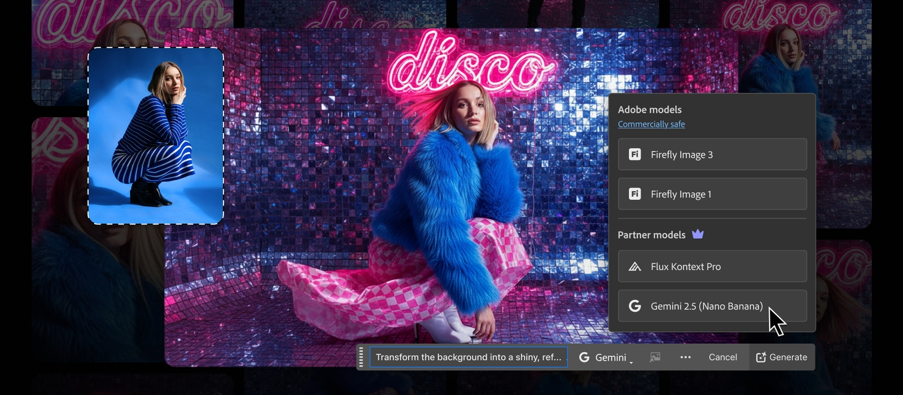
Adobe Photoshop — Generative Fill (Firefly + Gemini 모델 선택)
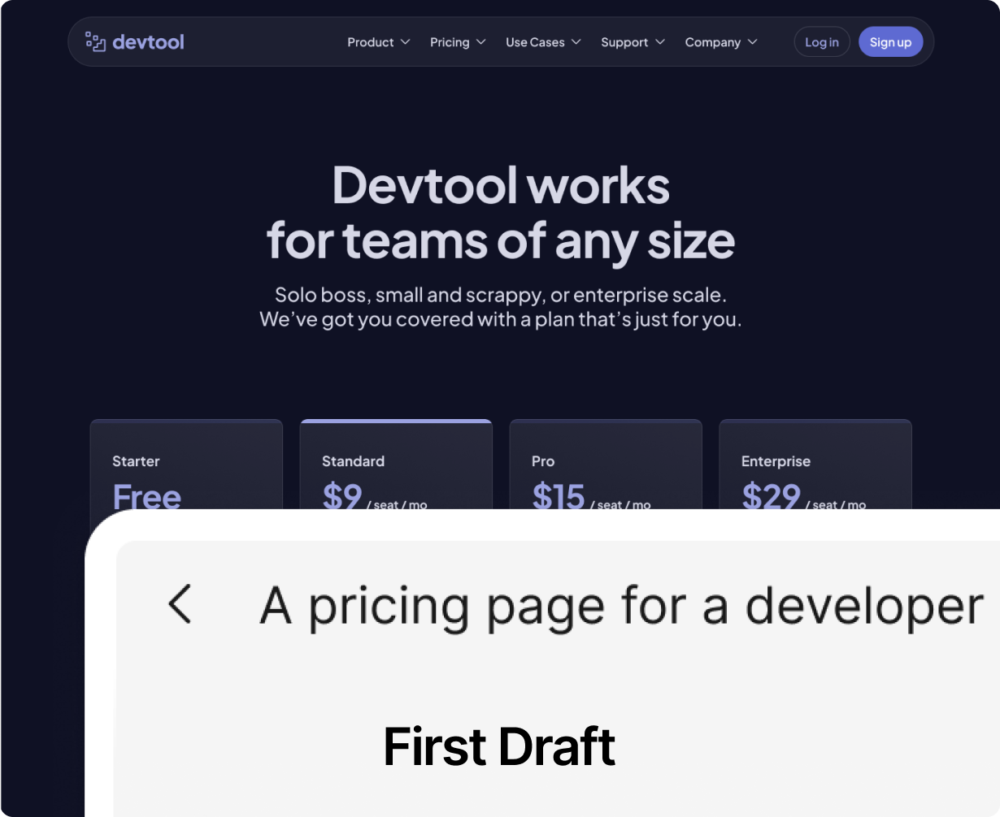
Figma Make — 텍스트 설명만으로 디자인 목업 생성
도구
AI 통합 현황
Adobe Photoshop
Generative Fill이 가장 많이 쓰는 기능 1위 등극
Adobe Firefly
Image Model 5 (4K), Generate Soundtrack, Generate Speech, AI 영상 편집
Figma
Figma Make — 자동 디자인 목업, 레이아웃 제안, UI 카피 작성. $100K+ 고객의 30%가 주간 사용
Canva
Magic Studio — Magic Write, Edit, Expand, Eraser 등 전 기능 AI화
핵심
Photoshop, Figma, Canva — 여러분이 앞으로 쓸 모든 디자인 도구에 AI가 이미 내장되어 있다. AI를 모르면 도구의 절반을 못 쓰는 것과 같다.
Adobe Firefly 진화 타임라인
시기
주요 이벤트
2023.03
Firefly 베타 출시 (이미지 생성, 텍스트 효과)
2023.10
Firefly Image 2 → Photoshop Generative Fill 통합
2024
Firefly Image 3, Creative Cloud 전면 통합
2025.04
Firefly Boards (멀티플레이어 생성형 캔버스)
2025.10
Image Model 5 (4K), AI 사운드트랙/음성 생성, AI 영상 편집
2025.11
Nano Banana Pro 직접 통합 (Photoshop + Firefly)
→ 2년 만에 이미지 생성 → 영상 편집 → 음성/사운드까지. Adobe의 모든 제품이 AI-first로 전환 중.
Figma의 AI 전환
시기
주요 이벤트
2025.05
AI 기반 사이트/앱 프로토타입 자동 생성
2025.07
Figma Make 출시 — 텍스트 설명만으로 디자인 목업 생성
2025 Q3
Make이 신규 고객 유치의 핵심 동인
→ Figma 시장점유율: UI/UX 카테고리 80~90%. 사실상 업계 표준 도구가 AI를 중심에 놓음.
1-9. 디자인 교육이 바뀌고 있다
해외 디자인 명문대의 변화
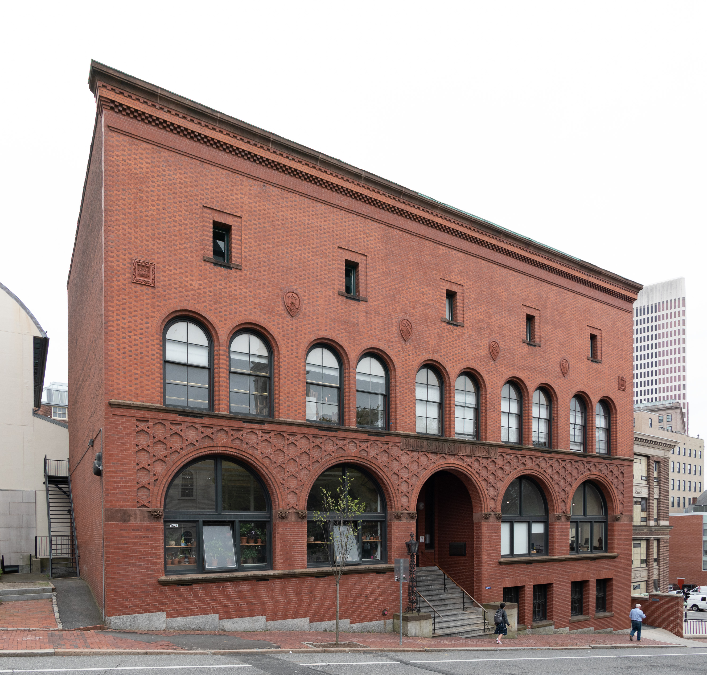
RISD — "Art and Computation" BFA 학위 신설
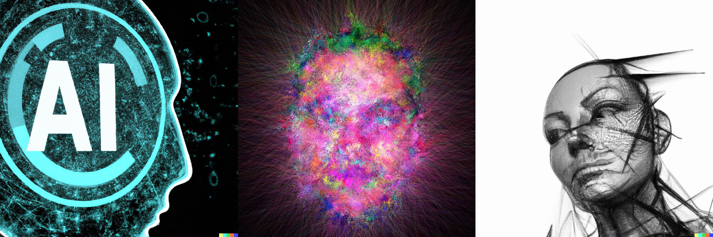
국민대학교 — AI디자인학과 신설
학교
변화 내용
RISD (미국)
"Art and Computation" BFA 학위 신설 — 로보틱스, AI, 생성 아트, 이머시브 미디어 포함
RISD
교수진 대상 "Critical Thinking & Making with AI" 3일 집중 교육 (2025.02)
RISD
평생교육: "Understanding and Exploring AI" 과정 운영
한국의 변화
기관
변화 내용
국민대학교
AI디자인학과 신설 — AI 기반 생성적 디자인 중심 교과과정
한양사이버대
AI산업디자인학과 신설 — IoT, 로봇, AI, 빅데이터 활용 디자이너 양성
한국디자인진흥원
2024 「디자인 산업분야 생성형 AI 활용 인력실태 및 교육훈련 수요조사」 발간
AI 디자인 자격증 등장
AI-PDTQ (AI Product Design Technique Qualification): 생성형 AI의 프로덕트 디자인 실무 적용 능력 인증
AI-GDTQ (AI Graphic Design Technique Qualification): 그래픽 디자인에서의 AI 활용 역량 공식 인증
시사점
국민대는 이미 AI디자인학과를 만들었다. RISD는 AI를 정규 학위 과정에 포함시켰다. 자격증도 나왔다. AI는 선택이 아니라 기본 교양이 되고 있다.
1-10. 예측: 앞으로 3년
시장 전망
전망
수치
출처
전 세계 AI 지출 (2026)
$2조 이상
Gartner
AI 에이전트 운영 기업 (2027)
86%
Gartner
AI 기반 디자인 도구 시장 (2035)
$340.9억 (현재 $83.2억, 4배↑)
Market Research Future
생성형 AI 경제적 가치
$2.6조 ~ $4.4조
McKinsey
현재 기술로 자동화 가능한 업무 비율
60~70%
McKinsey
AI 활용 시 생산성 데이터
지표
수치
출처
AI 활용 크리에이티브의 주당 절약 시간
최대 11시간
WiFi Talents
AI 초기 드래프팅으로 프로젝트당 절약
3시간
Cogenius
AI 활용 직원 평균 생산성 향상
40%
Apollo Technical
AI 고노출 산업 매출 성장률
27% (vs AI 저노출 9%, 3배↑)
PwC
Mattel: AI로 제품 컨셉 이미지 생성량
기존 대비 4배
McKinsey
에이전시 56%가 AI 도입 후 효율 향상 체감
56%
WiFi Talents
1-11. 현장의 목소리
Envato "Beyond Adoption" 글로벌 리포트 (2025)
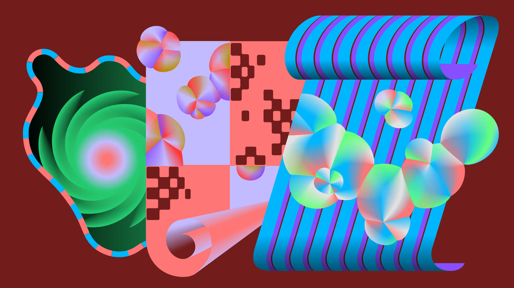
Figma 2025 AI Report (2,500명, 7개국)
Envato "Beyond Adoption" 글로벌 리포트 (2025.11, 1,780명)
응답
비율
매일 클라이언트 작업에 AI 사용
49%
6개월 전보다 AI 사용량 "상당히" 증가
50%
AI 중심 크리에이티브 산업에 "준비 안 됨"
69%
클라이언트에게 말 안 하고 AI 사용한 경험
58%
69%가 "준비 안 됐다"
크리에이티브 전문가 10명 중 7명이 AI 시대에 준비가 안 됐다고 느낀다. 지금 배우면 상위 31%에 들어간다.
Figma 2025 AI Report (2,500명, 7개국)
발견
수치
"AI가 업무 효율을 크게 높인다"
78%
"AI 제품에서 디자인이 기존보다 더 중요"
52%
핵심 디자인 작업에 AI 사용하는 디자이너
31% (개발자 59% 대비 낮음)
올해 AI 기반 제품 출시
1/3 (전년 대비 50%↑)
디자이너에게 유리한 데이터
Figma 조사에서 52%가 "AI 시대에 디자인이 더 중요해진다"고 답했다. AI가 디자이너를 대체하는 게 아니라, AI를 잘 다루는 디자이너의 가치가 올라간다.
1-12. 결론: AI는 포토샵이다
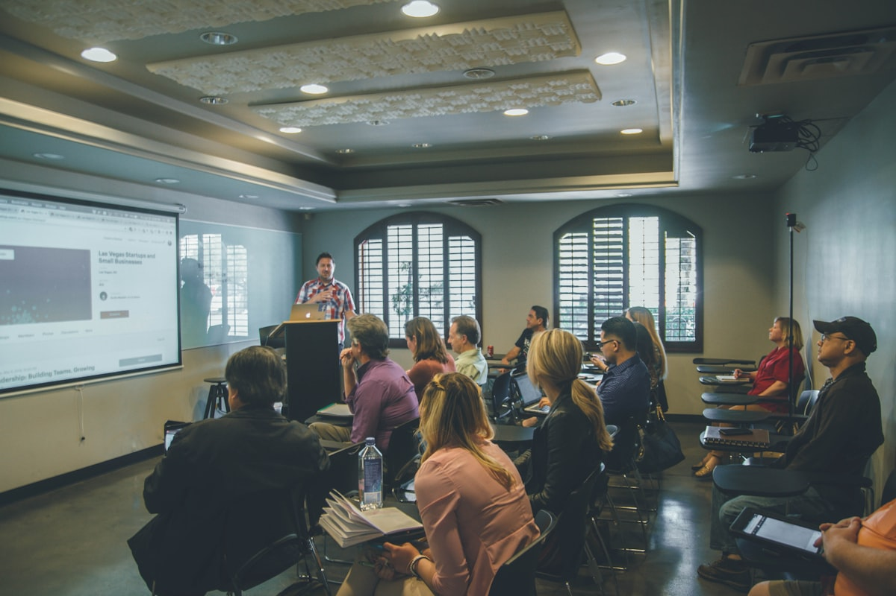
┌─────────────────────────────────────────────────────┐
│ 역사는 반복된다 │
│ │
│ 1990년대: "포토샵? 손으로 그리는 게 진짜 디자인이지" │
│ → 2000년대: 포토샵 못 하면 취업 불가 │
│ │
│ 2020년대: "AI? 직접 만드는 게 진짜 디자인이지" │
│ → 2030년대: AI 못 쓰면 취업 불가 (?) │
│ │
│ 차이점: 포토샵은 10년 걸렸다. AI는 2~3년이면 된다. │
└─────────────────────────────────────────────────────┘
시대
필수 스킬
도입까지 걸린 시간
1990s
포토샵, 일러스트레이터
~10년
2010s
UI/UX, Figma, 반응형 디자인
~5년
2020s
AI 이미지/영상 생성, 프롬프트 설계
~2~3년
"AI를 배우지 않는 디자이너가 대체되는 게 아니다. AI를 배운 디자이너에게 대체되는 것이다."
Part 2
AI 이미지 — Nano Banana 2 & Pro
2-1. Nano Banana 시리즈 개요
Google DeepMind가 Gemini 모델 위에 구축한 AI 이미지 생성/편집 모델
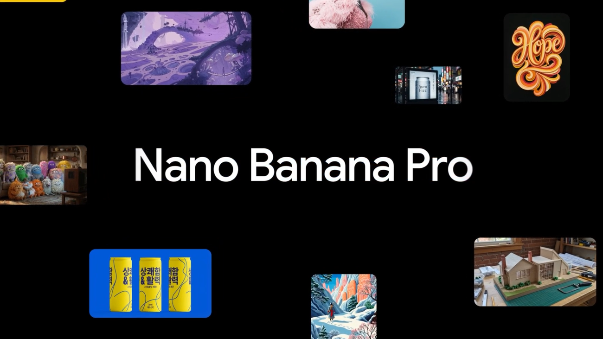
모델
기반 엔진
출시일
포지셔닝
Nano Banana (초대)
Gemini 2.5 Flash Image
2025.08
빠른 생성, 바이럴 (3D 피규어 등)
Nano Banana Pro
Gemini 3 Pro Image
2025.11.20
고품질, 4K, 추론 기반
Nano Banana 2
Gemini 3.1 Flash Image
2026.02.26
Pro 기능 + Flash 속도
출시 후 Gemini 앱에 1,000만 신규 사용자 유입
몇 주 만에 2억 건 이상 이미지 편집
2-2. 핵심 기능 비교
Nano Banana Pro — 최고 품질
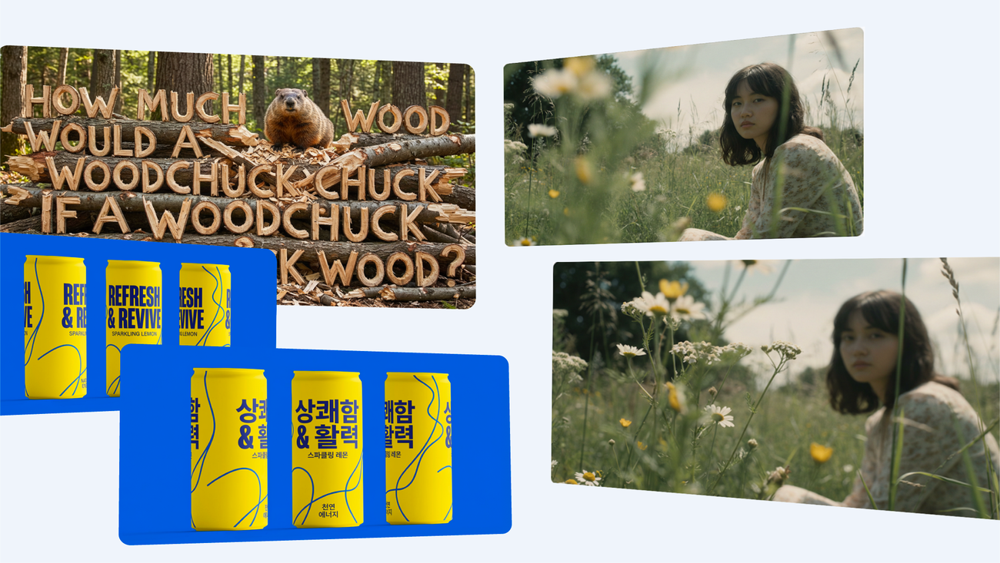
Nano Banana Pro — 한글 텍스트 렌더링 (업계 최강 수준)
기능
설명
네이티브 4K
1K/2K/4K 해상도 직접 생성
텍스트 렌더링
한글 포함 다국어 텍스트 정확 렌더링 (업계 최강)
14장 레퍼런스
스타일 가이드, 로고, 컬러 팔레트, 캐릭터 시트 동시 로드
Google Search 연동
실시간 지식 기반 정확한 렌더링
64K 컨텍스트
긴 구조화 프롬프트, 다단계 워크플로우
캐릭터 일관성
연속 장면에서 캐릭터 정체성 유지
Nano Banana 2 — 속도 + 품질 균형
기능
설명
3~5초 생성
Flash 기반 극적 속도
Pro급 기능
Pro 수준을 Flash 속도로
캐릭터 5명 + 오브젝트 14개
다중 이미지 간 일관성 유지
실시간 웹 검색
시각 참조 자동 반영
2-3. 경쟁 도구 비교표
항목
Nano Banana 2
Nano Banana Pro
Midjourney V7
GPT Image
FLUX.2
속도
⚡ 3~5초
10~15초
10~30초
5~15초
5~10초
최대 해상도
4K
4K
2K+
2K
2K+
텍스트 렌더링
★★★★
★★★★★
★★★
★★★★
★★★
편집 기능
내장
내장
제한적
내장
제한적
가격
$0.067/장
$0.134/장
$10~120/월
GPT Plus
다양
강점
속도+범용
품질+텍스트
예술적 스타일
정확한 묘사
오픈소스
2-4. 디자인 실무 활용 시나리오
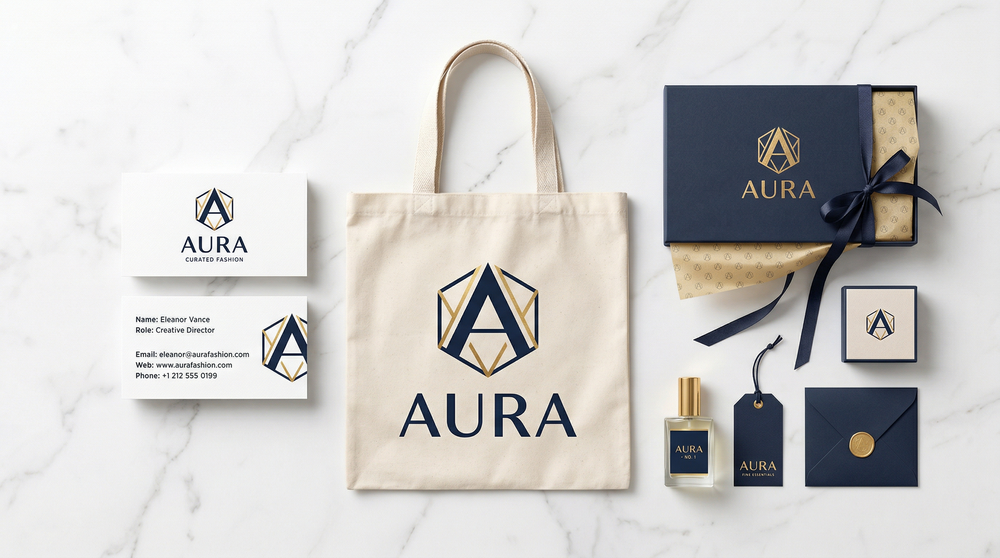
AI 생성 브랜드 목업 예시
Nano Banana Pro로 생성한 브랜드 아이덴티티 목업 — 명함, 토트백, 패키지
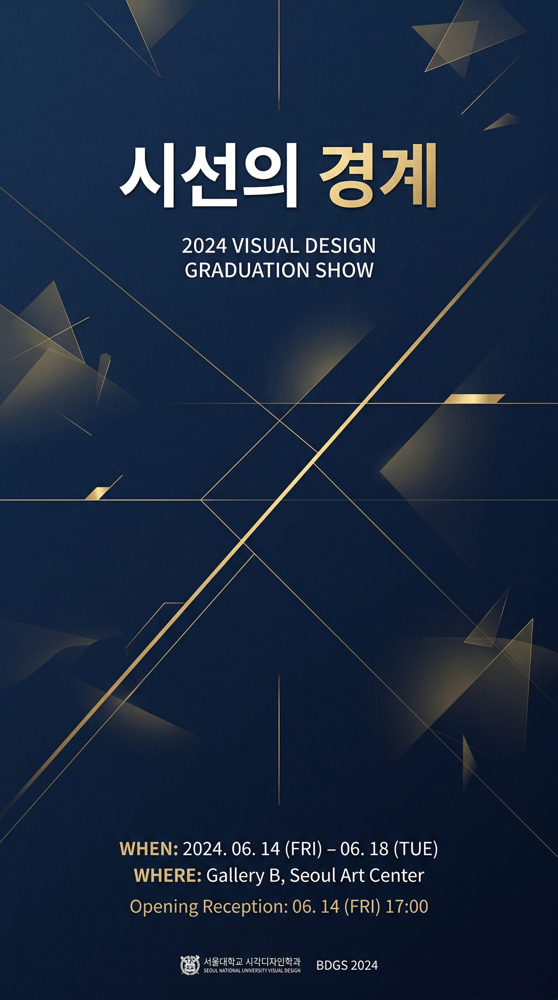
AI 생성 포스터 예시
졸업 전시 포스터 '시선의 경계' — 한글 텍스트 + 기하학적 디자인
시나리오 A: 브랜드 시안 빠른 생성
브랜드 가이드라인(로고, 컬러, 폰트) 레퍼런스로 업로드 → "이 브랜드 스타일로 SNS 배너 만들어줘" → 5~10개 시안 빠르게 생성 → 클라이언트 피드백 → 정제
시나리오 B: 포스터 내 텍스트 디자인
한글 텍스트 렌더링 활용. 이미지와 타이포그래피가 통합된 포스터 시안. Pro의 4K 출력으로 인쇄 품질 확보.
시나리오 C: 캐릭터 일관성 시리즈
캐릭터 시트 레퍼런스 업로드 → 다양한 장면/포즈/배경으로 시리즈 생성. 웹툰, 동화책, 브랜드 마스코트 활용.
시나리오 D: Adobe 연동 워크플로우
Nano Banana Pro → Adobe Firefly/Photoshop 직접 통합. Firefly에서 레퍼런스 업로드 → Firefly Boards에서 캠페인 시각화 → Generative Fill 연동.
2-5. 접근 방법
방법
비용
적합한 사용
Gemini 앱 (무료)
0원 (하루 ~20장, 1K)
학습, 실습
Gemini 앱 (구독)
$19.99~$124.99/월
일상 작업
Google AI Studio
API 종량제
대량 생성, 자동화
Adobe Firefly
Adobe 구독
디자인 워크플로우 통합
2-6. 이미지 프롬프트 잘 쓰는 법
프롬프트는 "AI에게 말 거는 것"이 아니라, 완성된 이미지를 글로 묘사하는 것이다.
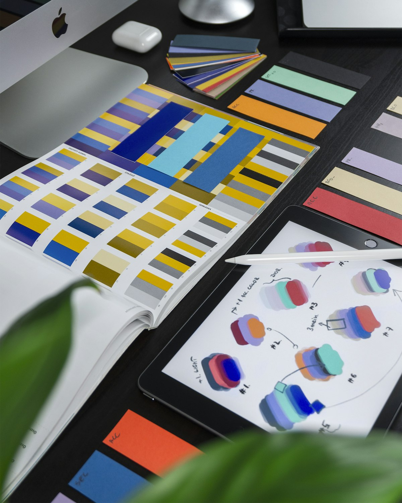
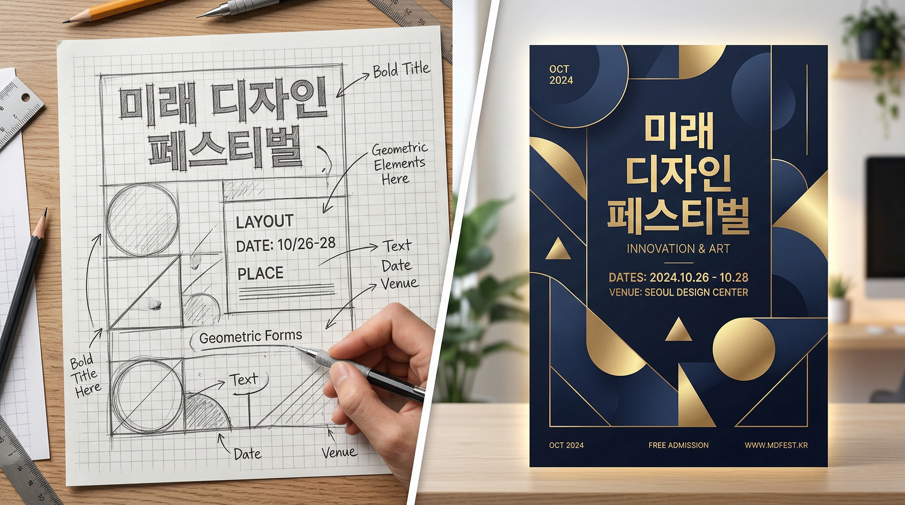
핵심 마인드셋: "완성 이미지 디스크라이브"
❌ 초보의 프롬프트:
"예쁜 포스터 만들어줘"
✅ 프로의 프롬프트:
"흰색 배경 위에 네이비 컬러의 산세리프 한글 타이틀 '시선의 경계'가
중앙 상단에 크게 배치되어 있다. 타이틀 아래로 금색 기하학적 선들이
대각선으로 교차하며 화면을 분할한다. 하단에는 작은 영문 서브타이틀
'HANYANG WOMEN'S UNIVERSITY VISUAL DESIGN 2026'이 있다.
전체적으로 미니멀하고 세련된 분위기. 4K 인쇄용 해상도."
핵심 원칙
이미 완성된 이미지가 눈앞에 있다고 상상하고, 그것을 제3자에게 설명하듯 써라. 이것이 좋은 프롬프트의 비결이다.
프롬프트 해부학 — 7가지 구성 요소
#
요소
설명
예시
1
주제 (Subject)
무엇이 그려져야 하는가
"a Korean woman in her 20s holding a coffee cup"
2
구도 (Composition)
어디에 어떻게 배치되는가
"centered, rule of thirds, close-up portrait"
3
스타일 (Style)
어떤 시각적 느낌인가
"minimalist, flat design, editorial photography"
4
색감 (Color)
색상 팔레트
"muted earth tones, navy and gold, monochrome"
5
조명 (Lighting)
빛의 방향과 분위기
"soft natural light, golden hour, studio rim light"
A minimalist poster design [스타일] featuring abstract geometric shapes
[주제] arranged diagonally across the frame [구도]. Color palette of
deep navy, white, and metallic gold accents [색감]. Soft gradient
lighting from top-left [조명]. Bold Korean title "시선의 경계" centered
at the top [텍스트]. 4K resolution, vertical A2 poster format [기술 사양].
스타일 키워드 사전 — 시각디자인 전공자용
사진/포토그래피 스타일
키워드
결과
editorial photography
잡지 에디토리얼 느낌
product photography, white background
깔끔한 제품 촬영
street photography, candid
자연스러운 거리 사진
fashion photography, high-end
하이엔드 패션 화보
architectural photography
건축 사진
flat lay photography
위에서 내려다본 배치
cinematic still, anamorphic lens
영화적 스틸컷
shot on Hasselblad, medium format
중형 카메라 질감
그래픽/일러스트 스타일
키워드
결과
flat design, vector style
플랫 벡터
isometric illustration
아이소메트릭
line art, minimal
라인 드로잉
watercolor illustration
수채화
paper cut-out style, layered
페이퍼 컷아웃
risograph print, grain texture
리소그래프 인쇄
screen print, limited color
실크스크린
collage, mixed media
콜라주
3D render, clay material
클레이 3D
glassmorphism, frosted glass
글래스모피즘
brutalist design
브루탈리즘
파인아트 스타일
키워드
결과
oil painting, impasto technique
유화 임파스토
in the style of Bauhaus
바우하우스
Swiss design, International Typographic Style
스위스 타이포그래피
Art Deco, geometric patterns
아르데코
Japanese woodblock print, ukiyo-e
우키요에
Korean ink wash painting, 수묵화
수묵화
분위기/무드
키워드
결과
ethereal, dreamy
몽환적
moody, dramatic
무거운 분위기
clean, sophisticated
깔끔하고 세련된
vibrant, energetic
활기찬
nostalgic, retro
레트로 향수
futuristic, sci-fi
미래지향적
organic, natural
자연스러운
luxurious, premium
고급스러운
조명 키워드 상세
키워드
효과
추천 용도
soft natural light
부드러운 자연광
인물, 제품
golden hour lighting
따뜻한 황금빛
감성적 장면
studio lighting, three-point
스튜디오 3점 조명
제품, 인물
rim light, backlit
역광, 윤곽광
드라마틱한 실루엣
neon lighting, colorful
네온 조명
사이버펑크, 나이트
overhead light, top-down
위에서 내려오는 빛
음식, 플랫레이
volumetric lighting, god rays
볼류메트릭 빛줄기
신비로운 분위기
low-key lighting, chiaroscuro
명암 대비 강한
아트, 드라마
diffused overcast light
흐린 날 부드러운 빛
패션, 미니멀
구도/카메라 키워드
키워드
효과
close-up, extreme close-up
클로즈업
medium shot, full body shot
미디엄 / 풀바디
bird's eye view, top-down
조감도
low angle, worm's eye view
로우앵글 (위압적)
Dutch angle, tilted frame
기울어진 프레임 (긴장감)
wide angle, panoramic
와이드
symmetrical composition
대칭 구도
rule of thirds
삼분법
negative space, minimal
여백 활용
centered composition
중앙 정렬
depth of field, bokeh
아웃포커스 보케
흔한 실수 & 해결법
❌ 실수
✅ 해결
"예쁜 포스터"
→ 구체적 스타일/색감/구도 지정
"좋은 느낌으로"
→ "clean, sophisticated, minimalist"
한 문장에 모든 것
→ 요소별로 끊어서 작성
모호한 색상 ("밝은 색")
→ "pastel pink #FFB6C1, soft mint #98FB98"
스타일 혼재 ("사실적이면서 만화풍")
→ 하나의 스타일을 명확히 선택
텍스트 지정 없이 "글자 넣어줘"
→ 정확한 문구, 폰트 스타일, 위치 지정
해상도/비율 미지정
→ "4K, 3:4 vertical, print-ready" 명시
레벨업: 반복 정제 (Iterative Refinement)
좋은 이미지는 한 번에 나오지 않는다. 반복 수정이 핵심이다.
Round 1: 전체 구도와 분위기 잡기
"Minimalist poster, navy and gold, geometric shapes, 4K"
→ 결과 확인: 구도는 좋은데 색감이 너무 어둡다
Round 2: 색감 조정
"같은 구도인데, gold를 더 밝게, 배경을 off-white로 바꿔줘"
→ 결과 확인: 색감은 좋은데 텍스트가 필요하다
Round 3: 텍스트 추가
"한글 타이틀 '시선의 경계'를 상단 중앙에 bold sans-serif로 추가"
→ 결과 확인: 거의 완성, 세부 조정
Round 4: 최종 정제
"타이틀 크기를 20% 키우고, 하단에 작은 영문 서브타이틀 추가"
→ 완성!
실무 팁
처음부터 완벽한 프롬프트를 쓰려 하지 마라. 대략적인 방향 → 점진적 수정이 훨씬 효율적이다. 이것이 실제 디자인 프로세스(스케치 → 시안 → 정제)와 동일한 흐름이다.
모델이 바뀌어도 남는 노하우 — 범용 프롬프트 원칙
Nano Banana, Midjourney, GPT Image, FLUX — 도구는 6개월마다 바뀐다. 하지만 좋은 프롬프트를 쓰는 능력은 어떤 모델에서든 통한다.
원칙 1
시각적 사고를 글로 번역하라 — 디자이너의 최대 무기
디자이너가 비전공자보다 AI를 잘 쓸 수 있는 이유:
비전공자의 머릿속: "멋진 포스터" → 프롬프트: "멋진 포스터"
(이미지 없음) (정보 없음)
디자이너의 머릿속: 구도, 색감, 타이포, 여백, 시선 흐름
→ 프롬프트: 이 모든 걸 구체적으로 서술
디자인 지식
프롬프트로 번역하면
그리드 시스템
"centered composition, aligned to thirds, balanced whitespace"
색채학
"complementary colors: deep navy against warm amber, 70-20-10 rule"
타이포그래피
"large bold sans-serif title, small light-weight body text, clear hierarchy"
시선 흐름
"eye flow from top-left title → center visual → bottom-right CTA"
여백의 미
"generous negative space around the subject, breathing room, uncluttered"
대비와 강조
"high contrast between foreground subject and muted background"
질감과 물성
"matte paper texture, soft grain, tactile organic feel"
"프롬프트 엔지니어링은 결국 시각 언어를 텍스트 언어로 번역하는 것이다. 시각 언어를 가장 잘 아는 사람이 시각디자인 전공자다. 여러분이 이미 가진 지식이 곧 AI 시대의 경쟁력이다."
원칙 2
빼는 것이 더하는 것보다 중요하다 — 네거티브 프롬프트 사고법
모델
네거티브 프롬프트 방법
Midjourney
--no text, --no watermark
Stable Diffusion / FLUX
negative_prompt: 파라미터
Nano Banana / GPT Image
프롬프트 안에 "without ~", "no ~" 명시
모든 모델 공통
"avoid ~", "do not include ~"
Without: watermark, text overlay, blurry, low quality,
distorted hands, extra fingers, cropped, border, frame,
logo, signature, noise, grain (unless intentional)
디자이너 팁
AI가 자꾸 넣는 원치 않는 요소(워터마크, 이상한 텍스트, 프레임)를 알아두고 선제적으로 빼라. "깨끗한 캔버스"를 확보한 뒤 원하는 요소만 넣는 것이 효율적이다.
추상적 ◄─────────────────────────────────► 구체적
20% 50% 90%
"dreamy "dreamy portrait "Close-up portrait of a
portrait" of a woman, Korean woman in her 20s,
soft pastel soft smile, wearing a cream
colors, knit sweater. Pastel pink
natural light" background. Shot on 85mm
lens, f/1.8 shallow depth
of field. Soft window
light from camera-left.
Subtle warm color grading."
구체성 수준
언제 쓰나
20~30% (추상적)
영감 탐색, 예상치 못한 결과를 원할 때, 브레인스토밍
50~60% (중간)
방향은 정했지만 AI의 해석 여지를 남기고 싶을 때
80~90% (구체적)
머릿속에 정확한 이미지가 있을 때, 최종 시안
프로의 워크플로우
추상적으로 시작 → 마음에 드는 방향 발견 → 점점 구체화. 처음부터 90%로 쓰면 AI의 창의적 해석을 놓친다. 처음엔 넓게, 나중에 좁게.
원칙 5
"같은 뜻, 다른 단어"가 결과를 바꾼다 — 동의어 실험
개념
버전 A
버전 B
차이
밝은
bright
luminous
bright=선명, luminous=은은한 빛
오래된
old
vintage / antique / weathered
뉘앙스 전부 다름
부드러운
soft
gentle / delicate / subtle
soft=촉각, gentle=감성, delicate=섬세
어두운
dark
moody / noir / shadowy / dim
각각 다른 분위기
깨끗한
clean
minimal / pristine / polished
미니멀 vs 새것 vs 광택
실습 과제
같은 프롬프트에서 형용사 1개만 바꿔보기. "soft"를 "gentle"로, "bright"를 "luminous"로. 결과가 어떻게 달라지는지 관찰하는 것이 프롬프트 감각을 키우는 최고의 훈련이다.
❌ "레트로 느낌 포스터"
✅ "1970s Polish film poster style, limited color silkscreen,
hand-drawn typography, bold geometric shapes"
주의사항
실존 작가 이름을 쓸 때는 스타일 참조임을 명확히 하라. "by Saul Bass"보다 "inspired by the graphic style of Saul Bass-era film posters"가 윤리적으로도, 결과적으로도 낫다.
원칙 7
프롬프트 디버깅 — 원하는 결과가 안 나올 때
문제 진단 플로우차트:
결과가 마음에 안 든다
├─ 주제가 틀렸다 → 주제 묘사를 더 구체적으로
├─ 스타일이 틀렸다 → 스타일 키워드 교체 (동의어 실험)
├─ 구도가 틀렸다 → 카메라/구도 키워드 추가
├─ 색감이 틀렸다 → 구체적 색상명/헥스코드 사용
├─ 불필요한 요소가 있다 → 네거티브 프롬프트 추가
├─ 전체적으로 품질이 낮다 → 품질 부스터 키워드 추가
└─ 뭐가 문제인지 모르겠다 → 프롬프트를 절반으로 줄여서 테스트
최후의 수단: 절반으로 줄이기 — 프롬프트가 너무 길면 AI가 요소 간 충돌을 일으킨다. 프롬프트를 반으로 줄여서 기본 결과를 확인한 뒤, 하나씩 다시 추가하며 어느 지점에서 품질이 떨어지는지 찾는다.
원칙 8
모델 간 프롬프트 이식법
요소
Nano Banana
Midjourney
GPT Image
프롬프트 언어
영어 권장 (한국어도 가능)
영어 필수
한국어도 잘 이해
프롬프트 길이
길어도 OK (64K 컨텍스트)
짧고 키워드 중심
대화체, 자연어 OK
스타일 지정
키워드 나열
--style, --stylize 파라미터
자연어 설명
비율 지정
프롬프트 내 텍스트
--ar 16:9
프롬프트 내 텍스트
네거티브
"without ~" 텍스트
--no ~
"~는 빼줘" 자연어
레퍼런스
이미지 최대 14장 업로드
--sref, --cref URL
이미지 업로드
강점
편집, 텍스트, 속도
예술적 스타일, 미감
지시 이해도, 대화형 수정
이식 전략:
핵심 골격은 유지: 주제 + 스타일 + 색감 + 구도 = 모든 모델 공통
모델별 문법만 변환: 파라미터 형식, 길이, 언어만 조정
같은 컨셉을 2~3개 모델에 넣어보기: 각 모델의 해석 차이에서 배움
[공통 골격]
"Minimalist exhibition poster, geometric shapes,
navy and gold, Swiss typography style, 4K"
[Nano Banana]
위 골격 + 레퍼런스 이미지 업로드 + 한글 텍스트 지정
[Midjourney]
위 골격 + --ar 2:3 --stylize 200 --no watermark text
[GPT Image]
"전시 포스터를 만들어줘. 미니멀한 기하학적 디자인,
네이비와 골드 컬러, 스위스 타이포그래피 스타일로.
세로 비율, 4K 해상도."
원칙 9
프롬프트 라이브러리를 만들어라
프로 디자이너가 무드보드와 레퍼런스 폴더를 관리하듯, 잘 된 프롬프트를 수집하고 분류하는 습관이 가장 큰 차이를 만든다.
프롬프트 라이브러리 = 디자이너의 AI 레퍼런스 북. 좋은 레퍼런스를 많이 가진 디자이너가 좋은 결과를 내듯, 좋은 프롬프트를 많이 가진 디자이너가 AI를 잘 쓴다.
원칙 10
디자이너의 눈 — AI가 절대 대체 못하는 것
AI가 생성 → 디자이너가 판단
AI 생성물 10개
┌──┬──┬──┬──┬──┬──┬──┬──┬──┬──┐
│ 1│ 2│ 3│ 4│ 5│ 6│ 7│ 8│ 9│10│
└──┴──┴──┴──┴──┴──┴──┴──┴──┴──┘
│
디자이너의 눈 (큐레이션)
│
┌─────┴─────┐
│ 3번 선택 │ ← 이 판단이 핵심 가치
│ + 수정 지시│
└───────────┘
AI는 "생성"을 하고, 디자이너는 "선택"과 "판단"을 한다.
디자이너만 할 수 있는 것
왜 AI가 못하는가
"이 시안이 브랜드에 맞는지" 판단
브랜드 맥락 이해 부족
"이 구도가 시선을 잘 이끄는지" 평가
인간 시지각 이해 한계
"이 색감이 타겟 고객에게 먹히는지" 결정
마케팅 맥락 부재
"이건 트렌디한데 1년 뒤에도 괜찮을지" 예측
시대 감각 부족
"클라이언트가 진짜 원하는 건 이거다" 해석
비언어적 소통 불가
10개 중 "이게 제일 낫다"고 고르기
미적 판단 기준 부족
"AI 시대에 디자이너의 가치는 '만드는 손'이 아니라 '고르는 눈'에 있다. 그 눈은 디자인 교육과 실무 경험에서만 길러진다. 여러분이 지금 배우고 있는 것이 바로 그것이다."
Nano Banana 전용 프롬프팅 팁
레퍼런스 이미지 활용법 (Nano Banana의 최대 강점)
전략
방법
효과
스타일 트랜스퍼
좋아하는 디자인 레퍼런스 업로드 + "이 스타일로 [새 주제] 만들어줘"
스타일 일관성
컬러 팔레트 지정
컬러칩/팔레트 이미지 업로드 + "이 색감으로"
정확한 색상
로고/브랜드 적용
로고 파일 업로드 + "이 브랜드 아이덴티티로 배너 만들어줘"
브랜드 일관성
레이아웃 참조
레이아웃 스케치/와이어프레임 업로드 + "이 구도로 실제 디자인"
구도 제어
캐릭터 시트
캐릭터 정면/측면 업로드 + "이 캐릭터가 [장면]에 있는 모습"
캐릭터 일관성
한글 텍스트 렌더링 (Nano Banana Pro 특화)
✅ 좋은 예:
"포스터 상단 중앙에 '디자인의 미래'라는 한글 텍스트를
bold sans-serif 스타일로, 네이비 컬러로 크게 배치.
자간은 넓게, 행간은 좁게."
❌ 나쁜 예:
"한글 텍스트 넣어줘"
텍스트 프롬프트 요소
지정해야 할 것
문구
정확한 텍스트 (따옴표로 감싸기)
위치
상단/중앙/하단/좌측/우측
크기
크게/작게/화면의 1/3 등
폰트 느낌
bold, thin, serif, sans-serif, handwritten
색상
구체적 색상명 또는 헥스코드
효과
그림자, 외곽선, 그라데이션, 3D 등
실전 프롬프트 템플릿 5종
1. 제품 광고 이미지
Product photography of [제품명] on a [배경 설명].
Shot from [각도]. [조명 설명].
Clean, minimal composition with plenty of negative space.
[브랜드 컬러] color accents.
Text overlay: "[카피 문구]" in [폰트 스타일] at [위치].
4K, 1:1 square format for Instagram.
2. 이벤트/전시 포스터
[스타일] poster design for [이벤트명].
Main visual: [주요 비주얼 요소 상세 묘사].
Color palette: [색상 1], [색상 2], [색상 3].
Typography: title "[제목]" in [폰트 스타일],
subtitle "[부제]" in [폰트 스타일].
Layout: [레이아웃 설명].
[세로/가로] A2 poster format, print-ready resolution.
3. SNS 배너/카드뉴스
Social media [배너/카드] design, [가로:세로 비율].
Background: [배경 설명].
Main element: [주요 요소].
Text: "[메인 카피]" in large [폰트 스타일],
"[서브 카피]" in smaller text below.
Brand colors: [색상]. Clean, modern, scroll-stopping.
4. 브랜드 아이덴티티 목업
Brand identity mockup showing [로고/제품명] applied to
[목업 대상: business card, tote bag, signage, packaging].
[스타일: minimal, luxurious, playful] aesthetic.
[소재: matte paper, kraft paper, glossy] material.
Overhead flat lay arrangement on [배경].
Soft studio lighting, slight shadow.
5. 캐릭터/마스코트
[스타일: cute, modern, geometric] character design of [캐릭터 설명].
[표정/포즈] expression.
Color scheme: [색상].
Simple background: [배경].
Consistent with [브랜드/프로젝트] visual identity.
Full body, front-facing, centered composition.
Part 3
AI 영상 — Seedance 2.0
3-1. Seedance 2.0 개요
ByteDance Seed 연구팀이 개발한 멀티모달 AI 영상 생성 모델. 2026년 현재 AI 영상 벤치마크 1위 (Artificial Analysis Video Arena)
항목
스펙
개발사
ByteDance (TikTok/CapCut 모회사)
출시
2026년 2월
최대 길이
15초
최대 해상도
1080p
입력
이미지 9개 + 영상 3개 + 오디오 3개 + 텍스트
특징
네이티브 오디오 동시 생성 (업계 최초 수준)
립싱크
8개+ 언어 지원 (한국어 포함)
3-2. 핵심 차별점
디렉터 레벨 컨트롤
카메라 무빙 지정: 돌리줌, 랙포커스, 트래킹샷, POV 전환, 핸드헬드. 조명, 그림자, 캐릭터 모션 프롬프트로 직접 제어. 멀티샷 스토리텔링 가능.
영상 + 오디오 동시 생성
별도 사운드 작업 없이 영상과 싱크된 오디오 자동 생성. 효과음, 배경음, 대사까지 동시 처리. 사운드 디자인 단계 대폭 간소화.
멀티모달 입력
한 번의 생성에 이미지 + 영상 + 오디오 + 텍스트 동시 참조. 레퍼런스 기반 정밀 제어 가능.
3-3. 경쟁 모델 비교
항목
Seedance 2.0
Sora 2 (OpenAI)
Kling 3.0
Runway Gen-4.5
벤치마크 순위
1위
3위
2위
4위
최대 길이
15초
~20초
~10초
~10초
오디오 동시생성
✅
❌
❌
❌
카메라 컨트롤
★★★★★
★★★★
★★★
★★★★
인체 동작
★★★★
★★★★
★★★★★
★★★
물리 시뮬레이션
★★★
★★★★★
★★★
★★★
추천 용도
종합 영상·광고
스토리 내러티브
액션/댄스
영화 후반작업
3-4. 디자인 실무 활용 시나리오
시나리오 A: 브랜드 영상 프로토타이핑
브랜드 이미지 + 무드보드 레퍼런스 업로드 → 카메라 무빙, 분위기 지정 → 15초 콘셉트 영상 생성 → 클라이언트 시안으로 제시 → 본 촬영 가이드로 활용
시나리오 B: 소셜 미디어 숏폼
제품 사진 → 제품 소개 영상 자동 생성 → 오디오 동시 생성으로 BGM까지 원스톱. TikTok/Instagram Reels용 콘텐츠 빠른 제작.
참조 이미지 + 오디오 기반 몰입형 영상 소스 생성. 공간 설치, 프로젝션 맵핑용 소재. TouchDesigner 등과 결합 가능.
3-5. 접근 방법
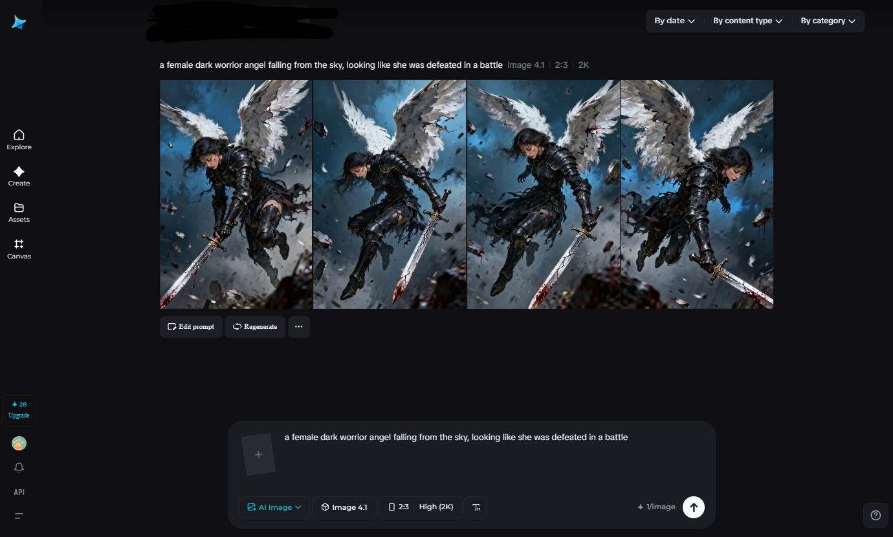
Dreamina — Seedance 2.0 영상 생성 인터페이스
플랫폼
접근성
비용
Dreamina (dreamina.capcut.com)
글로벌 웹
월 ~$9.60부터
CapCut Pro
데스크톱/모바일
CapCut 구독에 포함
지멍/샤오윈취에 (중국)
중국 전용
무료 일일 크레딧
저작권 유의사항
Seedance 2.0은 출시 직후 유명인/캐릭터 무단 활용 바이럴로 디즈니, MPA, 파라마운트 등에서 저작권 침해 중단 요청. 현재 IP 보호 워터마킹 강화됨. 실습 시 저작권 있는 캐릭터/인물 사용 금지.
Part 4
실습 워크숍
1
Nano Banana 2로 디자인 시안 만들기
소요시간: 30분 | 준비물: Gemini 앱 접속 (무료 계정)
실습 과제: "한양여대 시각디자인과 졸업 전시 포스터" AI 시안 제작
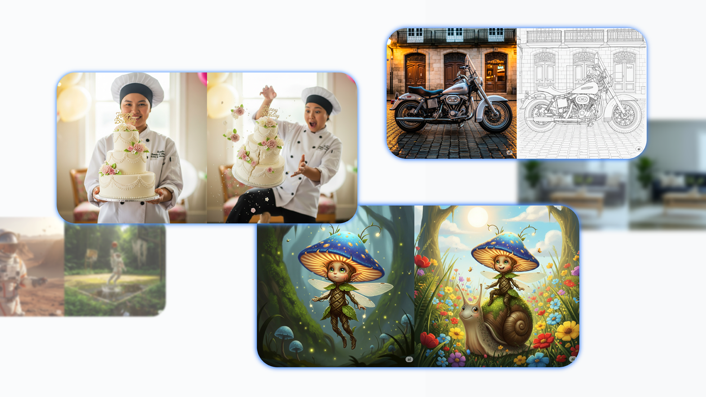
Gemini 앱 — 이미지 생성 및 편집 인터페이스
단계
내용
Step 1
Gemini 앱 접속 → 이미지 생성 모드
Step 2
간단한 프롬프트로 첫 이미지 생성
Step 3
프롬프트 정교화 — 스타일, 색감, 레이아웃 지정
Step 4
레퍼런스 이미지 업로드하여 스타일 가이드 적용
Step 5
한글 텍스트 포함된 포스터 시안 생성
Step 6
마음에 드는 시안 선택 → 편집 기능으로 세부 수정
프롬프팅 팁:
Korean university graduation exhibition poster for Visual Design department.
Title: "시선의 경계" in bold Korean typography.
Style: minimalist, modern, sophisticated.
Color palette: deep navy, white, gold accent.
Include abstract geometric shapes representing the boundary between
analog and digital design.
4K resolution, print-ready quality.
2
Seedance 2.0으로 모션 만들기
소요시간: 30분 | 준비물: Dreamina (dreamina.capcut.com) 접속
실습 과제: 실습 1에서 만든 포스터를 모션 그래픽으로 변환
Dreamina — AI 영상 생성 인터페이스 (프롬프트 입력 → 영상 생성)
단계
내용
Step 1
Dreamina 접속 → 영상 생성 모드
Step 2
실습 1의 포스터 이미지 업로드
Step 3
카메라 무빙 지정 (슬로우 줌인, 패럴랙스 등)
Step 4
분위기/배경음 프롬프트 추가
Step 5
영상 생성 → 결과 확인
Step 6
프롬프트 수정하여 다른 버전 생성 → 비교
프롬프팅 팁:
Slow cinematic zoom into the poster. Geometric shapes gently rotate
and shift. Subtle particle effects in gold. Camera: slow dolly zoom.
Mood: elegant, sophisticated. Audio: ambient electronic, minimal.
3
통합 워크플로우 (이미지 → 영상)
소요시간: 20분 (시간 여유 시)
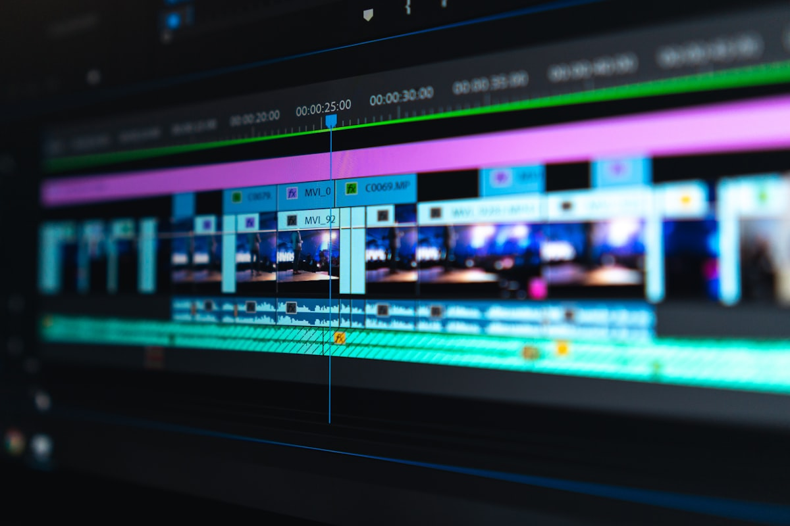
Nano Banana 2로 3장 시리즈 이미지 생성 (같은 캐릭터/스타일)
Seedance 2.0에 시리즈 이미지 업로드
연속 장면으로 15초 스토리 영상 생성
결과물 공유 및 피드백
Part 5
마무리 — 디자이너로서의 AI 전략
5-1. AI 시대 디자이너의 경쟁력
❌ "AI가 대신해줄 텐데 디자인 배워서 뭐하지?"
✅ "디자인을 아는 사람이 AI를 쓰면 아무도 못 따라온다"